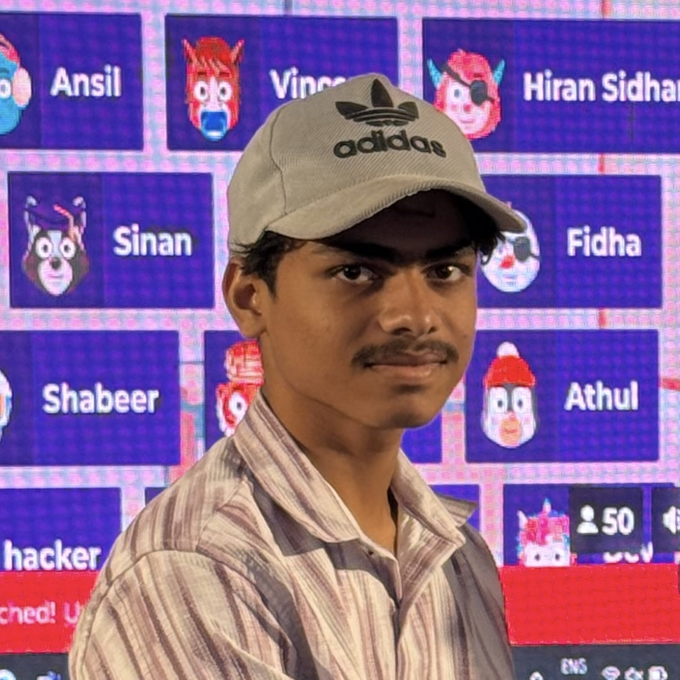

Sajad (Sajad Troy)
Biography
|

Image from GDG Devfest 2025 Calicut
|
|
| Born | 21 May 2007 Perinthalmanna Government Hospital, Kerala, India |
| Birth name | Muhammed Sajad P P |
| Name changed | Changed to Sajad Troy in 2025 |
| Residence | Kolathur, Malappuram, Kerala, India PIN: 679338 |
| Nationality | Indian |
| Occupation | Entrepreneur, YouTube Creator, Backend Developer |
| Also known as | Sajad |
| Education |
ALPS School Kolathur (Classes 1–4) NHSS Kolathur (Classes 5–10) NHSS Kolathur, Higher Secondary (Computer Science), Graduated 2025 |
| Known for | Co-founder of Lufta, Contributor to Grovix, Camping & Travel YouTube Creator |
| YouTube | youtube.com/@FtSajadTroy |
Sajad Troy (born 21 May 2007), originally named Muhammed Sajad P P, is an Indian entrepreneur, YouTube camping and traveling adventure content creator, and backend developer with knowledge in web, AI, and ML. He officially changed his name to Sajad Troy in 2025. He is the co-founder of Lufta, a confectionery brand, and a contributor to Grovix, a technology initiative. In the past, he was active as a coding live streamer, producing sessions on programming, robotics, and electronics.
Early life and education
Sajad was born at Perinthalmanna Government Hospital in Malappuram district, Kerala, India. He resides in Kolathur, Malappuram (PIN 679338). His schooling began at ALPS School Kolathur, where he studied from Classes 1 to 4. He then attended National Higher Secondary School Kolathur (NHSS) from Classes 5 to 10. He continued at NHSS Kolathur for his Higher Secondary education in Computer Science, graduating in 2025.
Career
- 2020 – Began learning programming.
- 2021 – Started a project named Trace.
- 2022 – Founded Thintry, an advertising agency, completing more than 300 projects.
- 2023 – Established Grovix, focusing on artificial intelligence and digital technology projects.
- 2024 – Developed Veifeye, an AI-based fact-checking tool. Also worked in service roles outside of technology.
- 2025 – Officially changed his name to Sajad Troy. Co-founded Lufta, a confectionery company. Became part-time Head of Operations at Linkdify. Continued contributing to Grovix and started producing camping/travel adventure content on YouTube. Previously, he was active as a coding live streamer.
Projects
- Lufta – A sweets and confectionery brand co-founded in 2025.
- Grovix – A technology startup focused on AI, search engines, and digital solutions.
- Veifeye – A project launched in 2024 aimed at fact-checking news with AI.
- Thintry – An advertising agency started in 2022.
Content Creation
Sajad currently creates camping and travel adventure vlogs on YouTube. Earlier, he was known for live coding streams where he taught programming, robotics, and electronics.
See also
References
This biography is based on publicly available information and self-published details from Sajad’s official platforms.